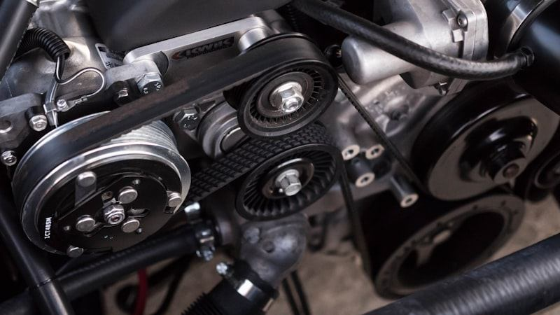

C-AUTO connecte chaque propriétaire à des professionnels certifiés. Diagnostic intelligent, devis transparent, suivi en temps réel — reprenez le contrôle.
68% des automobilistes ne comprennent pas les factures de leur mécanicien. Les devis sont obscurs, l'historique se perd, et la confiance s'effrite.

C-AUTO transforme chaque intervention en un processus transparent, traçable et compréhensible. Du premier diagnostic à la garantie post-réparation.
Un processus complet, du premier symptôme à la garantie.
Immatriculation, VIN, kilométrage — en 30 secondes, votre fiche est créée.
Un texte libre ou des photos. Notre moteur analyse et prédit les causes.
Pré-diagnostic automatique : sévérité, causes probables, recommandations.
Matching intelligent par spécialité, proximité et note. Pas de favoritisme.
Pièces et main-d'œuvre détaillées. Approuvez ou refusez en un clic.
Ordre de réparation, tâches cochées en temps réel, preuves photos.
Contrôle qualité systématique. Vous validez avant de récupérer le véhicule.
Tout est archivé : interventions, paiements, garanties. Transférable à la revente.
Chaque devis est détaillé ligne par ligne. Vous savez exactement ce que vous payez.
12 mois de garantie pièces et main-d'œuvre sur chaque intervention validée.
Un indice unique (0-100) qui résume l'état de votre véhicule en un coup d'œil.
On vous prévient avant chaque échéance. Plus de maintenance oubliée.
Chaque intervention est horodatée et signée. Impossible de falsifier le passé.
Sandbox intégré, anti double-facturation, garantie remboursement.
De l'entretien courant aux réparations complexes, C-AUTO couvre l'ensemble du cycle.
Vidange, filtres, liquides — selon le programme constructeur.
Mécanique, électronique, carrosserie — diagnostic précis.
Analyse pré-diagnostic par IA avant chaque intervention.
12 mois de couverture pièces et main-d'œuvre.
Garages indépendants, mécaniciens mobiles, spécialistes — C-AUTO vous donne accès à une clientèle qualifiée et un outil de gestion complet.
C-AUTO calcule automatiquement les prochaines maintenances selon le programme constructeur ET les recommandations de la communauté. Un score de santé unique (0-100) résume l'état de votre véhicule.
Décrivez votre problème en quelques mots. C-AUTO analyse les symptômes, identifie les causes probables et oriente vers le bon spécialiste — avant même de voir un mécanicien.
Accédez à un réseau de fournisseurs certifiés. Comparez les prix, vérifiez la compatibilité avec votre véhicule, commandez en quelques clics.
Entreprises, administrations, loueurs — suivez l'état de chaque véhicule, planifiez les maintenances, réduisez les coûts de 30%.
Chiffrement de bout en bout, hébergement souverain, conformité RGPD. C-AUTO traite vos données avec le même soin qu'un établissement bancaire.
« Enfin je comprends ce qu'on fait sur ma voiture. Le devis détaillé m'a convaincu. Plus jamais de surprise. »
« En tant que garage, C-AUTO nous a permis de gagner 40% de temps sur la gestion des devis. Nos clients sont plus satisfaits. »
« Le score de santé est génial. Je vois d'un coup d'œil si ma voiture a besoin d'attention. L'historique est rassurant. »
Rejoignez des milliers d'automobilistes qui font confiance à C-AUTO.